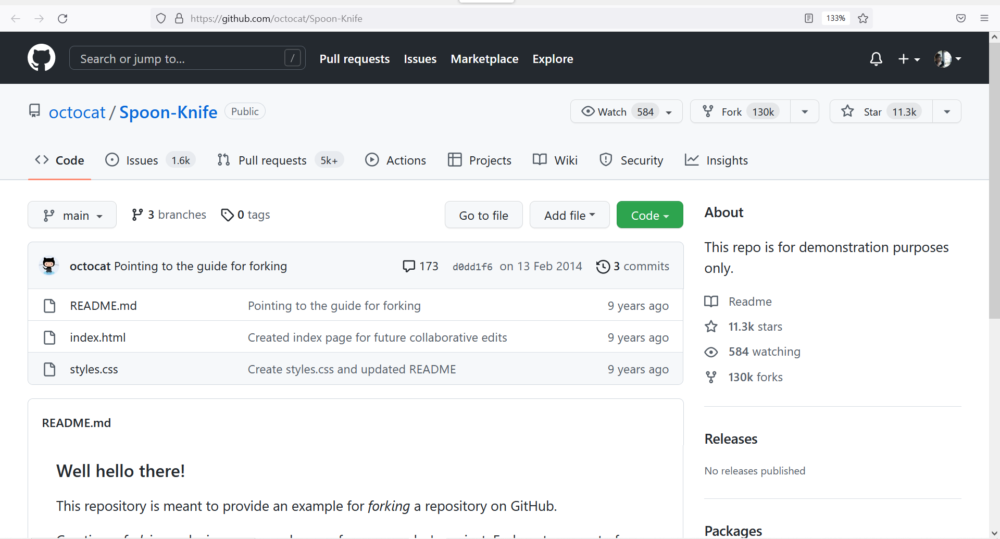
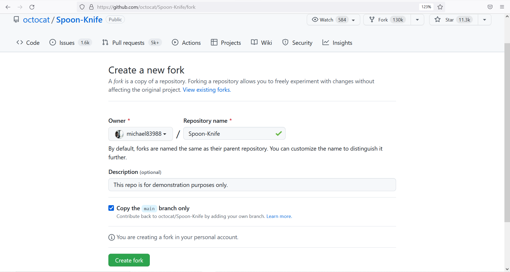
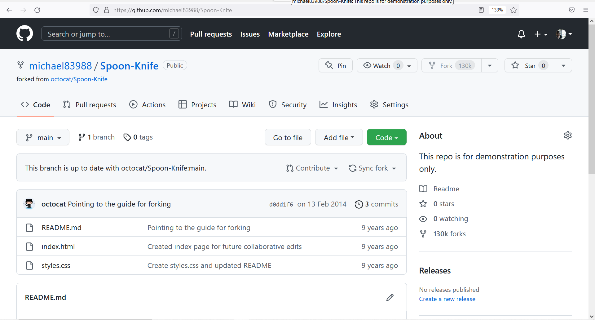
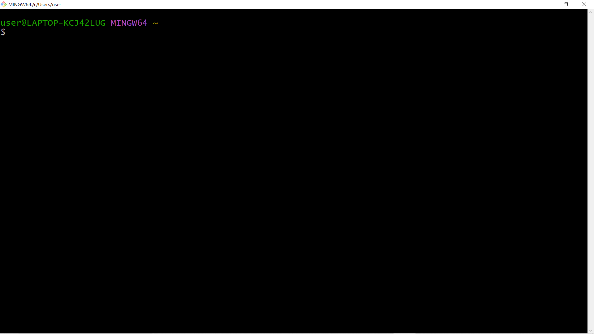
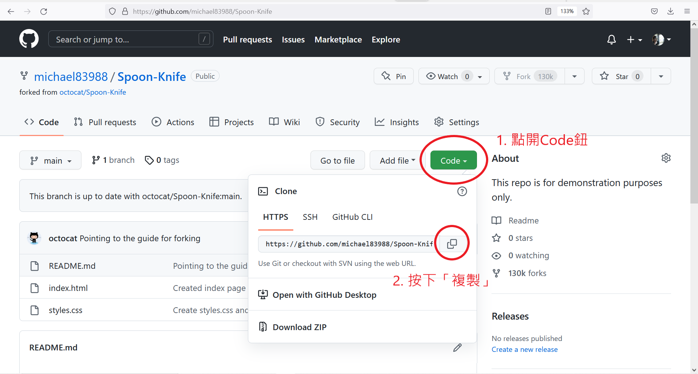
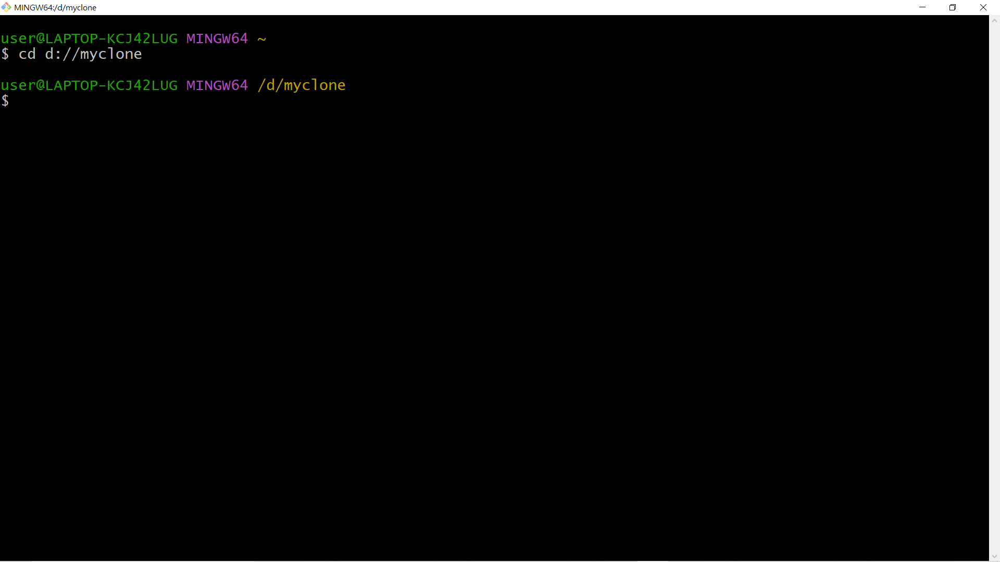
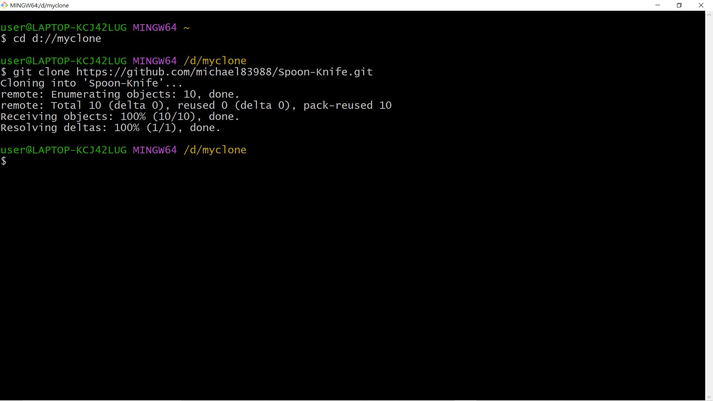
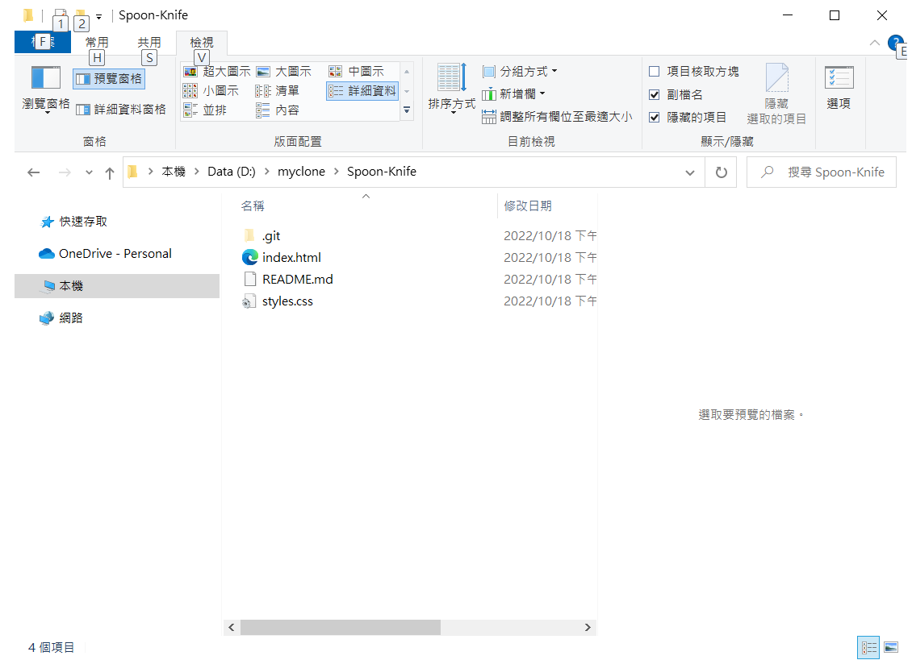

複製Repository
〈GitHub：文字工作者的社交平台〉第二回
這回要來談談如何將一個repository進行複製。會想要複製一個repository大概有兩個情況：
- 將別人的repository複製到自己這邊，然後以此為基礎去做開發。
- 想要將在雲端(網路)上的repository複製到自己的電腦裡，然後在不需要網路的環境下進行修改。
如果是從複製的repository目的地來看的話(複製的repository要放在哪裡)，又可以分成兩種情況：
- 放在雲端(GitHub平台)
- 放在自己的電腦
根據複製的repository要放的地方的不同，會需要用不同的方式，以下就來做個簡單的介紹～
放在雲端(GitHub平台)
這個非常的簡單。首先要點開目標的repository。假設想要複製的repository是這個：octocat/Spoon-Knife (這是個demo用的repository)。點開之後會看到這個畫面：

接著點畫面右上部分的Fork，來到這個畫面：

Owner、Repository name還有Description都可以自己選擇/自訂，這裡就用預設的就好。都好了之後就按下綠色按鈕”Create fork”。完成之後就會長這樣：

可以發現左上角已經變成michael83988/Spoon-Knife了！表示這個repository已經成功複製到自己的github中囉！再來就可以參考前一回的教學來使用這個repository了～
放在自己的電腦
這個稍微複雜一點，需要寫一些指令。不過也不用擔心，只會用到幾個指令而已(❁´◡`❁)
首先呢，最重要的是要先下載Git。到以下的網站，選擇適合自己電腦的版本下載。
通通都好了之後，需要打開Git Bash(Git相關的指令要在這裡輸入)，畫面大概長這樣：

再來，先切回到GitHub網頁，點開想要複製到電腦上的repository。以剛剛的Spoon-Knife為例。點開Code綠色鈕，然後在HTTPS分頁點選「複製」圖案，將網址複製。網址代表了這個repository本身，等等複製的時候會用到。

好了之後回到Git Bash。先把當前的目錄切換到準備用來儲存repository的資料夾。這邊來介紹一個指令：
$ cd [目標的資料夾]
例如：我想要切換到D槽的myclone資料夾，就輸入以下的指令：
$ cd d://myclone
然後按下enter。畫面會變成這樣，表示當前目錄已經成功切換。

再來就是重頭戲了。要把存在GitHub的repository複製到自己的電腦上。需要用到另一個指令：
$ git clone [repository的網址]
網址的部分就是前面複製的那一個。輸入：
$ git clone https://github.com/michael83988/Spoon-Knife.git
之後按enter執行。完成之後如下：

接著到D槽的myclone資料夾下看看，就發現多了一個Spoon-Knife的資料夾囉！裡面的內容也的確跟在GitHub上的一模一樣！

小結
透過GitHub上repository的fork功能，我們成功的把別人的repository複製到自己這邊；透過Git Bash的操作，我們也成功的把repository從網路上複製到自己的電腦裡。再來可能會有的問題應該就是如何將網路上repository的修改更新到自己的電腦，以及在本機端所做的修改如何上傳到網路上的repository吧？這部分就需要比較多Git指令的操作，等之後的文章再來揭曉如何使用吧～
國立交通大學材料系奈米科技碩士班畢業(現在應該稱國立陽明交通大學ʕ •ᴥ•ʔ)。雖然非資工相關科系畢業，但本著對資工領域的興趣而開始自學相關知識，目前則專攻網頁相關知識，如HTML5、CSS3、JavaScript、Node.js。以跨領域學習者的角度來介紹資工領域相關的知識，除了加深自己對相關知識的理解，也期望同是跨領域學習的朋友們因為瀏覽我的文章而有更多不一樣的觀點可以參考。